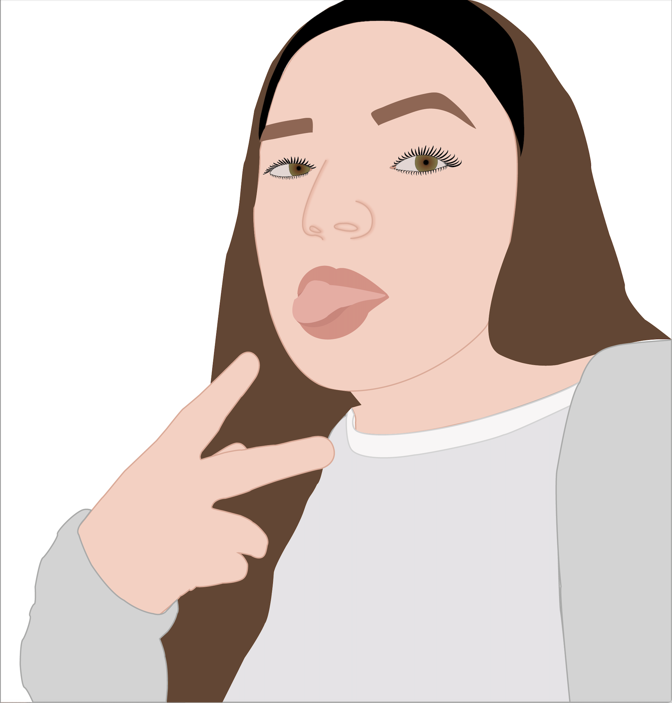
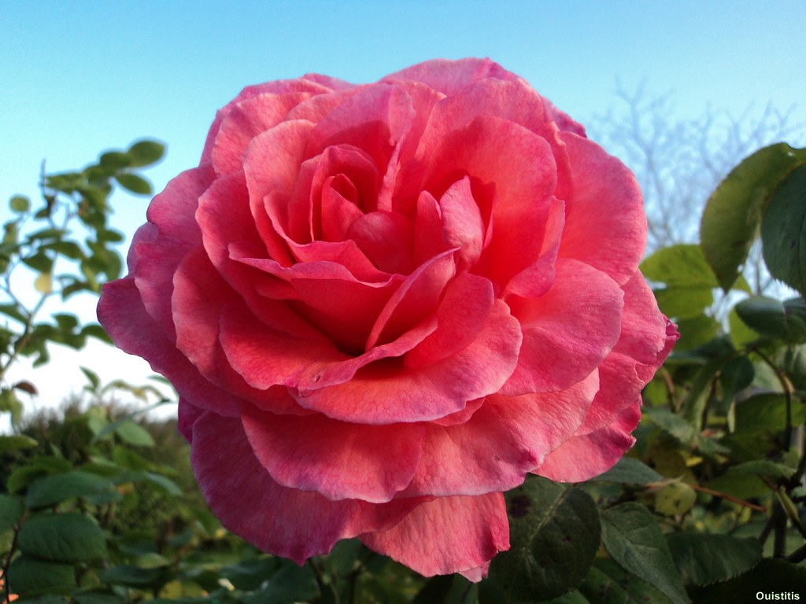
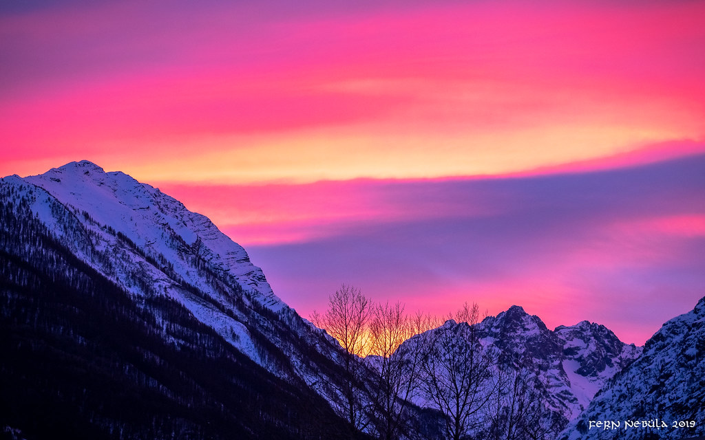
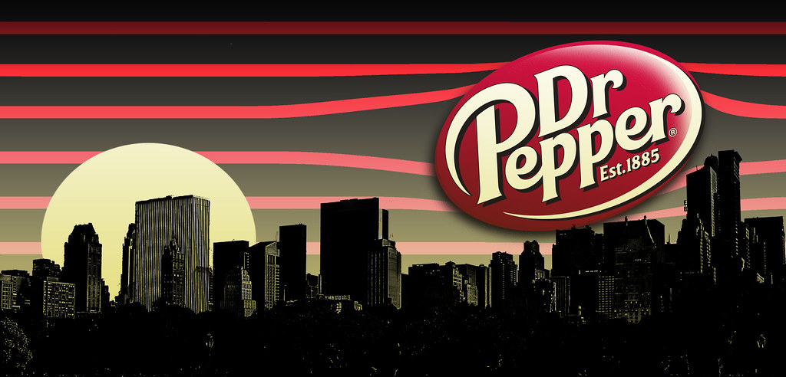
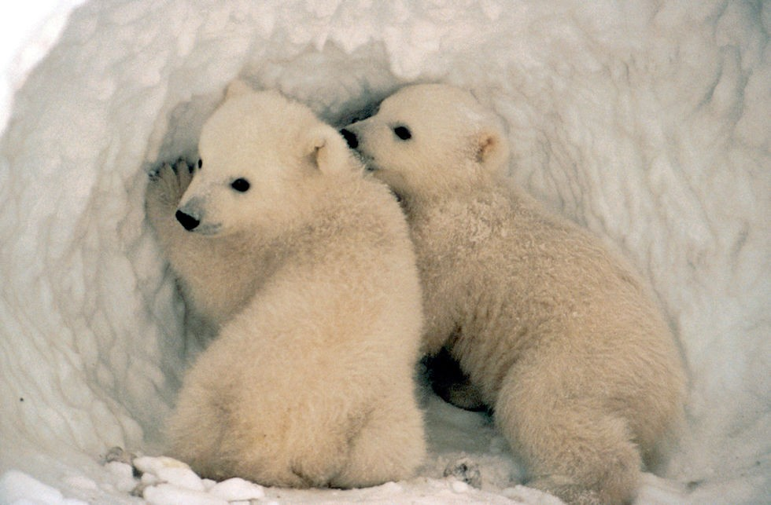

Hello, world! My name is Isabella.
This is a webpage all about me. My likes, dislikes, hopes, dreams, and favorite things.
Biography
I am currently a senior in high school. I love art (painting, drawing, digital), photography, and listening to music (Taylor Swift and One Direction & Solos). I plan on going to a four-year university to study graphic design; I am thinking of becoming a freelance artist. My creative goals for the summer are to improve my embroidering and to learn how to crochet.
In my spare time, I love to read, and watch Netflix, Disney+, and Youtube. I also enjoy traveling, especially to Florida over the summer and the mountains.
My Favorite Quotation
"To live is the rarest thing in the world. Most people exist, that is all." - Oscar Wilde
My Favorite Foods
- Pizza
- Cheeseburgers
- Pasta
- Ice Cream
- Grilled Turkey and Cheese Bagel
My Favorite One Direction Eras, in order
- Four (2014-2015)
- Midnight Memories (2013-2014)
- Made in the A.M. (2015-2016)
- Take Me Home (2012-2013)
- X Factor (2010-2011)
- Up All Night (2011-2012)
Places I’d Like to Visit, and What I’d Like to Do There
- England & Ireland
- Eat Food
- Clevedon Pier, London Bridge, Princess Park, W. Mandeville Bakery, Milkshake City
- Manchester, Doncaster, London, Mullingar
- France
- Eat food
- The Quartier Latin, the Île Saint-Louis, Le Marais
- Eiffel Tower, Seine River Cruise, Markets
- Cayman Islands
- Cayman Crystal Caves, Queen Elizabeth II Botanic Park, Seven Mile Beach
- Pedro St. James Castle, The National Gallery of the Cayman Islands
- See Family
Other Favorite Things
| Favorite Flower | Roses |  |
|---|---|---|
| Favorite Time of Day | Sunsets & Midnight |  |
| Favorite Drink | Dr. Pepper |  |
| Favorite Animal | Dogs & Polar Bear Cubs |  |
| Favorite Song | "Sunflower, Vol. 6" - Harry Styles
"Always You" - Louis Tomlinson "Babe (Taylor's Version)" - Taylor Swift |
 |
| Favorite Color | Pink, Blue, & Black |
Contact Information
Email: bluegreen28@gmail.com
Phone: 123-456-7890